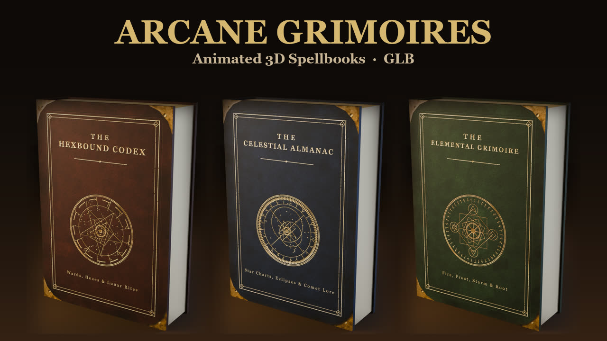
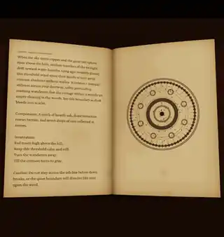
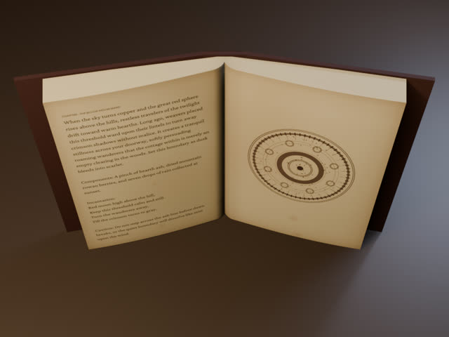
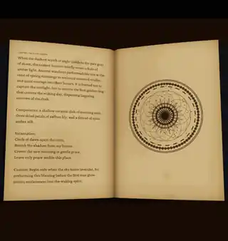
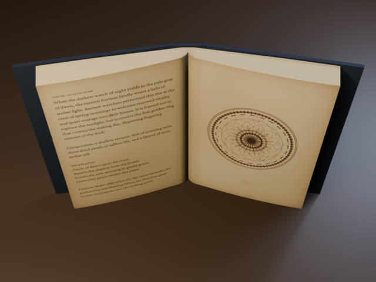
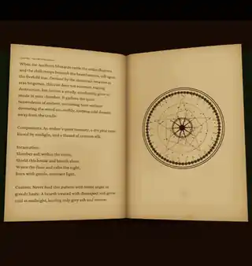
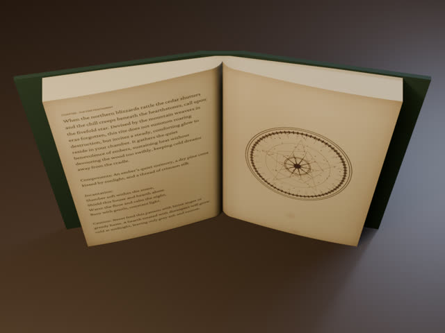

Arcane Grimoires Vol.1 — Animated 3D Spellbooks
Three fictional spellbooks as animated 3D models (GLB) for fantasy and RPG games, VRChat worlds, Blender scenes, tabletop streams, video intros and wizard's-desk renders. Each book opens, turns every page with bending paper, and closes.

The three books
Each volume has a leather cover with brass corners and a gilt magic-circle emblem, and 18 pages of aged parchment with readable fictional spell text written for this pack and a magic circle illustration for each chapter.

The Hexbound Codex
Halloween: wards, hexes and lunar rites. Brown leather.


The Celestial Almanac
Star charts, eclipses and comet lore. Midnight-blue leather.


The Elemental Grimoire
Fire, frost, storm and root. Green leather.

What's inside
- 3 books: The Hexbound Codex, The Celestial Almanac, The Elemental Grimoire
- 3 .glb files per book: closed (static), open (static) and animated
- 4 animation clips per book: Open, Flip (turns every page with bending paper), Close and CloseReverse
- glTF 2.0 binary with embedded textures; the page bending uses shape keys (morph targets)
- Front, back and spine cover textures (PNG), the book text, a render and a GIF preview for each book
- blender_play_clip.py: plays a clip in Blender (Blender keeps each glTF clip as a separate action)
- ZIP about 180 MB. Book text and README are in English
Works with
- Tested: Blender 5.2, Godot 4.6 (the clips appear in the imported scene's AnimationPlayer) and three.js
- Not tested by us: Unity (glTFast / UniGLTF), Unreal Engine and other glTF importers — they should work
License
Commercial use in your own projects (games, videos, VR worlds) is allowed. You may not resell or redistribute the models as assets, and no AI training. Full text in LICENSE.txt.